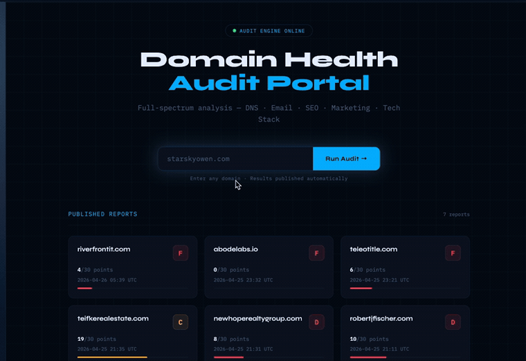

Enterprise‑grade audits & strategy for small teams that need clarity.
Next‑Gen‑IT helps owners and operators map the tools that run their business, identify mission‑critical technical debt, reduce duplicate spend, and harden workflows for continuity. Beyond the initial assessment, we turn one‑off findings into a living strategy for security and operational excellence.
Sample deliverables, one consistent client experience.
These examples show the two common Next-Gen-IT entry points: a full small-business tech ecosystem audit and a focused domain/email health audit. Both now use the same dark coral UI system as the portfolio.
Starsky Owen Realty
A sample Next-Gen-IT audit report for a small realty team. It maps the operating stack, lead-to-close workflow, technical risk areas, and prioritized action plan.
- Google Workspace + Drive
- Lofty CRM / lead routing
- DocuSign, Canva, QuickBooks
- Namecheap + AWS Route 53
Shonna King
A focused domain, email authentication, and web availability audit. It turns public MXToolbox-style findings into a prioritized remediation sequence.
- Website availability / HTTP 530
- DMARC, SPF, DKIM posture
- Google Workspace mail flow
- False-positive SMTP warning triage
Partnership Strategy
This guide outlines how Next-Gen-IT collaborates with partner agencies and vendors. It covers strategic alignment, co-branded approaches, real outreach moves, and how the portal and audits fit into a joint go‑to‑market motion.
- Partner & vendor alignment
- Co‑branded offerings
- Outreach & proposal moves
- Portal & audit integration
Email Security Pilot
A 90-day go-to-market campaign positioning email authentication as the entry point into real estate and title companies across Austin and Central Texas.
- Next-Gen-IT + Abode Labs pilot
- Wire fraud risk narrative
- SPF, DKIM, DMARC remediation path
- Partner revenue and scale model
Built for smaller teams that still need real architecture & a plan.
A five‑person real estate, title, agency, or local service team may not need a full enterprise transformation program, but they still depend on domains, email, shared files, CRMs, contract tools, accounting systems, and vendor accounts. Next‑Gen‑IT packages enterprise thinking into a smaller, practical engagement and adds an ongoing strategy layer to keep systems aligned and risks under control.
Run your own audit
Experience the Next-Gen-IT client audit portal directly on this page. The embedded interface lets you enter a domain and start a small‑business tech ecosystem scan immediately. All processing happens in your browser; no information is saved or transmitted to this site.

If the portal does not load properly in the embedded frame, you can open it in a new tab.